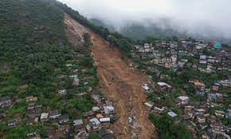

O estado do Rio de Janeiro vem sofrendo com grandes temporais neste verão de 2022, são diversos relatos e o número de pessoas afetadas só tem crescido!!
Uma forte chuva que atingiu o Rio levou o município a entrar em estágio de alerta, devido a grandes alagamentos e enxurradas. Ruas alagaram em vários bairros e a Defesa Civil informou que sirenes foram acionadas em áreas de risco da cidade!!
